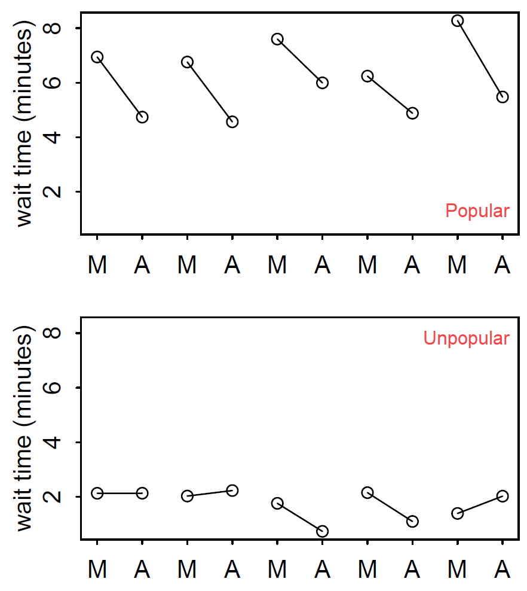

Adventures in Covariance
EES 5891-03
Bayesian Statistical Methods
Jonathan Gilligan
Class #20: Tuesday, November 08 2022
Adventures in Covariance
Varying Intercepts and Slopes
- Coffee Robot Example
- A robot visits \(N\) cafes
- Estimate the average waiting time \(W\) to get a coffee.
- Model: \[ \begin{align} W_{\text{cafe}} &\sim \text{Normal}(\mu_{\text{cafe}}, \sigma) \\ \mu_{\text{cafe}} &= \alpha_{\text{cafe}} \\ \alpha_{\text{cafe}} &\sim \text{Normal}(5,2) \\ \sigma &\sim \text{Expoonential}(1) \end{align} \]
- Different times of day
- Morning (busier) vs. afternoon (less busy)
- Model: \[ \begin{align} W_{\text{cafe}} &\sim \text{Normal}(\mu_{\text{cafe}}, \sigma) \\ \mu_{\text{cafe}} &= \alpha_{\text{cafe}} + \beta_{\text{cafe}} A\\ \alpha_{\text{cafe}} &\sim \text{Normal}(5, 2) \\ \beta_{\text{cafe}} &\sim \text{Normal}(-1, 0.5) \\ \sigma &\sim \text{Expoonential}(1) \end{align} \]
- Something’s missing …
Correlations
- Some cafes are very popular, and others are not popular
- Popular cafes are busy
- Big differences between morning and afternoon
- Unpopular cafes aren’t busy
- Not much difference between morning and afternoon
- Covariance between slopes (\(\beta\)) and intercepts (\(\alpha\)).

Modeling covariance
-
Covariance matrix \[ \begin{pmatrix} \text{variance of intercepts} & \text{covariance of intercepts and slopes} \\ \text{covariance of intercepts and slopes} & \text{variance of slopes} \end{pmatrix} \]
\[ \begin{pmatrix} \sigma^2_\alpha & \sigma_\alpha \sigma_\beta \rho \\ \sigma_\alpha \sigma_\beta \rho & \sigma^2_\beta \end{pmatrix} \]
- \(\rho\) is the correlation between slopes and intercepts (\(-1 \le \rho \le 1\)).
Simulation modeling
Simulation modeling
-
When we fit our model to observed data, we don’t know the true parameter values.
- We can’t assess how well the model estimates are.
Before fitting observed data, generate simulated data using known parameters and see how accurate the models’ estimates are.
-
Simulation parameters
-
Covariance
-
Generate \(\alpha\) and \(\beta\) params with covariance
-
Generate simulated data
set.seed(22) N_visits <- 10 afternoon <- rep(0:1, N_visits * N_cafes / 2) cafe_id <- rep(1:N_cafes , each = N_visits) mu <- a_cafe[cafe_id] + b_cafe[cafe_id] * afternoon sigma <- 0.5 # std dev within cafes wait <- rnorm(N_visits * N_cafes, mu, sigma) d <- data.frame(cafe = cafe_id, afternoon = afternoon, wait = wait)
What Is Covariance?
Fitting the Model:
Varying Slopes, Varying
Intercept
Fitting the Model
-
Model:
\[ \begin{align} W &\sim \text{Normal}(\mu, \sigma) \\ \mu &= \alpha_{\text{cafe}} + \beta_{\text{cafe}} A \\ \begin{bmatrix} \alpha_{\text{cafe}} \\ \beta_{\text{cafe}} \end{bmatrix} &\sim \text{MVNormal}\left( \begin{bmatrix} \alpha \\ \beta \end{bmatrix}, S \right) \\ S &= \begin{pmatrix} \sigma_\alpha & 0 \\ 0 & \sigma_\beta \end{pmatrix} R \begin{pmatrix} \sigma_\alpha & 0 \\ 0 & \sigma_\beta \end{pmatrix} \end{align} \]
- Priors \[ \begin{align} \alpha &\sim \text{Normal}(5,2) \\ \beta &\sim \text{Normal}(-1,0.5) \\ \sigma &\sim \text{Exponential}(1) \\ \sigma_\alpha &\sim \text{Exponential}(1) \\ \sigma_\beta &\sim \text{Exponential}(1) \\ R & \sim \text{LKJcorr}(2) \end{align} \]
- LKJ prior:
- Weakly-informative prior for correlation matrices.
LKJ Priors
- Correlation matrix: \[ R = \begin{pmatrix} 1 & \rho \\ \rho & 1 \end{pmatrix} \]
- \(\text{LKJcorr}(\eta)\)
- \(\eta > 1\): the greater \(\eta\) is, the more unlikely extreme correlations are
Fitting the model
-
Model
set.seed(867530) mdl_cafe <- ulam( alist( wait ~ normal(mu, sigma), mu <- a_cafe[cafe] + b_cafe[cafe] * afternoon, c(a_cafe,b_cafe)[cafe] ~ multi_normal(c(a, b), Rho, sigma_cafe), a ~ normal(5, 2), b ~ normal(-1, 0.5), sigma_cafe ~ exponential(1), sigma ~ exponential(1), Rho ~ lkj_corr(2) ), data=d, chains = 4, cores = 4) -
Extract samples from posterior
post <- tidy_draws(mdl_cafe) %>% mutate(label = "posterior") %>% rename(rho = `Rho[1,2]`) prior <- tibble(rho = rlkjcorr(1e4, K=2, eta=2)[,1,2], label = "prior") labels <- tibble(rho = c(-0.1, 0.3), y = c(1.3, 0.3), label = c("posterior", "prior")) ggplot(post, aes(x = rho, color = label)) + geom_density(bw = 0.05, linewidth=1) + geom_density(data = prior, linetype="dashed") + geom_text(data = labels, aes(y = y, label = label), size = 10, vjust = 0, hjust = 0) + scale_x_continuous(limits = c(-1,1), expand = c(0,0)) + scale_y_continuous(expand = expansion(c(0.005, 0), c(0, 0.05))) + scale_color_manual(values = c(prior = "black", posterior = rangi2), guide = "none") + labs(x = expr(rho), y = "density") + theme(plot.margin = unit(c(1,2,1,1), "lines"))
- Posterior is well within the prior:
- The data are determining the posterior
Shrinkage and Regularization
-
Shrinkage: Estimates for each cafe move toward the average
Instrumental Variables
Instrumental Variables
- Effect of education on wages
Does more school improve future wages?
-
Complication: People who are motivated and disciplined are likely to stay in school longer, and also earn more regardless of schooling:
\(U\) is an unobserved variable that describes the person’s work ethic and self-discipline.
The backdoor path \(E \leftarrow U \rightarrow W\) prevents us from drawing causal inferences from correlations between \(E\) and \(W\).
-
Instrumental variables:
- \(Q\) can be an
instrumental variable if:
- It’s independent of \(U\).
- It’s not independent of \(E\).
- \(Q\) cannot influence \(W\) except through \(E\).
- \(Q\) can be an
instrumental variable if:
Models with Instrumental Variables
- What are instrumental variables?
- Natural experiments
- We don’t have enough control of the system to do controlled experiments
- SO we use natural variations in instrumental variables as natural experiments
-
DAG:

-
We can’t just put \(Q\) in a regression model
- \(E\) is a collider of \(Q\) and \(U\).
- The collider opens up a non-causal path from \(Q\) to \(W\), which creates a false correlation
between \(Q\) and \(W\), even if \(E\) doesn’t influence \(W\).
- \(Q\) is a bias amplifier.

Example of Instrumental Variable
-
Example:

-
\(Q\) is the season of the year
- Students born earlier complete fewer grades by the time they reach the age where they can leave school (drop out).
- \(Q\) is not influenced by any of the other variables

-
Generate simulated data:
- Notice that in the simulated data, \(E\) has no effect on \(W\).
Writing a model
mdl_wages <- ulam(
alist(
W ~ dnorm(mu, sigma),
mu <- aW + bEW * E,
aW ~ dnorm(0, 0.2),
bEW ~ dnorm(0, 0.5),
sigma ~ dexp(1)
), data = dat_sim, chains = 4, cores = 4)## mean sd 5.5% 94.5% n_eff Rhat4
## aW 0.00 0.04 -0.06 0.07 1737 1
## bEW 0.40 0.04 0.33 0.46 1648 1
## sigma 0.92 0.03 0.88 0.96 1924 1- The influence of \(U\) causes the model to incorrectly think \(E\) has a significant effect on \(W\).
mdl_wages_q <- ulam(
alist(
W ~ dnorm(mu, sigma),
mu <- aW + bEW * E + bQW * Q,
aW ~ dnorm(0, 0.2),
bEW ~ dnorm(0, 0.5),
bQW ~ dnorm(0, 0.5),
sigma ~ dexp(1)
), data = dat_sim, chains = 4, cores = 4)## mean sd 5.5% 94.5% n_eff Rhat4
## aW 0.00 0.04 -0.06 0.06 1876 1
## bEW 0.64 0.05 0.57 0.71 1189 1
## bQW -0.41 0.05 -0.48 -0.33 1533 1
## sigma 0.86 0.03 0.82 0.90 1875 1- This is even worse:
- The estimate of the effect of \(E\) is even larger
- The model also thinks \(Q\) has a direct effect on \(W\).
A Better Model of Instrumental Variables
-
Formula:
\[ \begin{align} W &\sim \text{Normal}(\mu_{W}, \sigma_{W}) \\ \mu_W &= \alpha_W + \beta_{EW} E + U \\ E &\sim \text{Normal}(\mu_{E}, \sigma_{E}) \\ \mu_E &= \alpha_E + \beta_{QE} Q + U \\ Q &\sim \text{Categorical}({\small [0.25, 0.25, 0.25, 0.25]}) \\ U &\sim \text{Normal}(0, 1) \\ \begin{pmatrix} W \\ E \end{pmatrix} &\sim \text{MVNormal} \left( \begin{pmatrix} \mu_W \\ \mu_E \end{pmatrix}, S \right)\\ \mu_W &= \alpha_W + \beta_{EW} E \\ \mu_E &= \alpha_E + \beta_{QE} Q \end{align} \]
-
Model code
## mean sd 5.5% 94.5% n_eff Rhat4 ## aE 0.00 0.03 -0.06 0.05 1782 1 ## aW 0.00 0.05 -0.07 0.07 1643 1 ## bQE 0.59 0.04 0.53 0.64 1482 1 ## bEW -0.05 0.07 -0.17 0.07 916 1 ## Rho[1,1] 1.00 0.00 1.00 1.00 NaN NaN ## Rho[1,2] 0.54 0.05 0.46 0.62 972 1 ## Rho[2,1] 0.54 0.05 0.46 0.62 972 1 ## Rho[2,2] 1.00 0.00 1.00 1.00 NaN NaN ## Sigma[1] 1.03 0.05 0.96 1.10 1145 1 ## Sigma[2] 0.81 0.02 0.77 0.85 1736 1 \(\mu_{EW}\) is consistent with zero, as it ought to be.
New Data
-
Generate new data, where \(E\) has a positive effect on wages.
-
Rerun the model with new data:
## mean sd 5.5% 94.5% n_eff Rhat4 ## aE 0.00 0.04 -0.05 0.06 1578 1 ## aW 0.00 0.04 -0.06 0.06 1555 1 ## bQE 0.59 0.04 0.53 0.64 1167 1 ## bEW 0.23 0.07 0.12 0.33 869 1 ## Rho[1,1] 1.00 0.00 1.00 1.00 NaN NaN ## Rho[1,2] 0.54 0.05 0.46 0.63 870 1 ## Rho[2,1] 0.54 0.05 0.46 0.63 870 1 ## Rho[2,2] 1.00 0.00 1.00 1.00 NaN NaN ## Sigma[1] 0.88 0.04 0.81 0.94 910 1 ## Sigma[2] 0.81 0.03 0.77 0.85 1827 1- \(\beta_{EW}\) is consistent with the correct value 0.3.
Gaussian Processes
Continuous Categories
- Everything we’ve looked at with multilevel models so far has studied
the varying effects of discrete categories (cafes, individual
chimpanzees, academic departments, etc.).
- Data is organized in discrete clusters.
- There’s no special order to the clusters, no significance of being cluster #1.
- What about clustering on continuously distributed variables?
- Height
- Age
- Income
- …
- Gaussian Process models allow us to study variation in slope or intercept for continuously distributed predictor variables.
-
Distribution of Tools across the islands of Oceania
The Data
library(rethinking)
data(Kline)
data("islandsDistMatrix")
d <- Kline
dist <- islandsDistMatrix
kable(d)| culture | population | contact | total_tools | mean_TU |
|---|---|---|---|---|
| Malekula | 1100 | low | 13 | 3.2 |
| Tikopia | 1500 | low | 22 | 4.7 |
| Santa Cruz | 3600 | low | 24 | 4.0 |
| Yap | 4791 | high | 43 | 5.0 |
| Lau Fiji | 7400 | high | 33 | 5.0 |
| Trobriand | 8000 | high | 19 | 4.0 |
| Chuuk | 9200 | high | 40 | 3.8 |
| Manus | 13000 | low | 28 | 6.6 |
| Tonga | 17500 | high | 55 | 5.4 |
| Hawaii | 275000 | low | 71 | 6.6 |
- culture: Name of island culture
- population: Historical population size
- contact: low or high contact rate with other islands
- total tools: number of tools in historical tool kit
- mean TU: a measure of tool complexity
- Distance matrix (thousands of km):
| Malekula | Tikopia | Santa Cruz | Yap | Lau Fiji | Trobriand | |
|---|---|---|---|---|---|---|
| Malekula | 0.000 | 0.475 | 0.631 | 4.363 | 1.234 | 2.036 |
| Tikopia | 0.475 | 0.000 | 0.315 | 4.173 | 1.236 | 2.007 |
| Santa Cruz | 0.631 | 0.315 | 0.000 | 3.859 | 1.550 | 1.708 |
| Yap | 4.363 | 4.173 | 3.859 | 0.000 | 5.391 | 2.462 |
| Lau Fiji | 1.234 | 1.236 | 1.550 | 5.391 | 0.000 | 3.219 |
| Trobriand | 2.036 | 2.007 | 1.708 | 2.462 | 3.219 | 0.000 |
Modeling Tool Acquisition
-
Single-level Model:
\[ \begin{align} T &\sim \text{Poisson}(\lambda) \\ \lambda &= \alpha P^\beta / \gamma \end{align} \]
-
Multilevel model:
\[ \begin{align} T &\sim \text{Poisson}(\lambda) \\ \lambda &= \exp(k_{\text{society}}) \alpha P^\beta / \gamma \end{align} \]
- \(k\) is the varying intercept.
- Instead of assigning it randomly to each society category, we’re going to try to predict it from the distance of other islands.
\[ \begin{align} \begin{pmatrix} k_1 \\ k_2 \\ k_3 \\ \cdots \\ k_{10} \end{pmatrix} &\sim \text{MVNormal}\left( \begin{pmatrix} 0 \\ 0 \\ 0 \\ \cdots \\ 0 \end{pmatrix}, K \right) \\ K_{i,j} &= \eta^2 \exp( -\rho^2 D_{i,j}^2 ) + \delta_{i,j} \sigma^2 \end{align} \]
- \(D_{i,j}\) is the distance between islands \(i\) and \(j\)
- \(\delta_{i,j}\) is 1 if \(i == j\) and 0 otherwise.
- 10-dimensional prior
- Covariance matrix \(K\): \(K_{i,j}\) is the covariance between
societies \(i\) and \(j\).
- \(\exp(-\rho^2 D_{i,j}^2)\) gives the covariance its shape.
Covariance Function
Gaussian Process Model
data(Kline2) # load the ordinary data, now with coordinates
d <- Kline2
d$society <- 1:10 # index observations
dat_list <- list(
T = d$total_tools,
P = d$population,
society = d$society,
Dmat=islandsDistMatrix )
mdl_gp <- ulam(
alist(
T ~ dpois(lambda),
lambda <- (a * P^b / g) * exp(k[society]),
vector[10]:k ~ multi_normal(0, SIGMA),
matrix[10,10]:SIGMA <- cov_GPL2(Dmat, etasq, rhosq, 0.01),
c(a,b,g) ~ dexp(1),
etasq ~ dexp(2),
rhosq ~ dexp(0.5)
), data=dat_list, chains=4, cores=4, iter=2000 )## mean sd 5.5% 94.5% n_eff Rhat4
## k[1] -0.17 0.29 -0.66 0.29 918 1
## k[2] -0.03 0.29 -0.48 0.43 871 1
## k[3] -0.07 0.27 -0.50 0.35 854 1
## k[4] 0.34 0.26 -0.04 0.76 880 1
## k[5] 0.07 0.25 -0.31 0.45 867 1
## k[6] -0.38 0.27 -0.83 0.01 943 1
## k[7] 0.14 0.25 -0.24 0.52 860 1
## k[8] -0.21 0.25 -0.61 0.17 898 1
## k[9] 0.26 0.24 -0.10 0.64 865 1
## k[10] -0.16 0.34 -0.69 0.37 1213 1
## g 0.58 0.56 0.07 1.62 1983 1
## b 0.27 0.08 0.14 0.41 1309 1
## a 1.40 1.08 0.25 3.43 2208 1
## etasq 0.18 0.19 0.03 0.52 763 1
## rhosq 1.36 1.70 0.08 4.58 1861 1Posterior vs. Prior Covariance
Posterior on the distance matrix
-
Computer posterior median covariance:
# compute posterior median covariance among societies K <- matrix(0,nrow=10,ncol=10) for ( i in 1:10 ) for ( j in 1:10 ) K[i,j] <- median(post$etasq) * exp( -median(post$rhosq) * islandsDistMatrix[i,j]^2 ) diag(K) <- median(post$etasq) + 0.01 ## R code 14.43 # convert to correlation matrix Rho <- round( cov2cor(K) , 2 ) # add row/col names for convenience colnames(Rho) <- c("Ml","Ti","SC","Ya","Fi","Tr","Ch","Mn","To","Ha") rownames(Rho) <- colnames(Rho) Rho## Ml Ti SC Ya Fi Tr Ch Mn To Ha ## Ml 1.00 0.79 0.69 0.00 0.31 0.05 0.00 0.00 0.08 0 ## Ti 0.79 1.00 0.86 0.00 0.31 0.05 0.00 0.01 0.06 0 ## SC 0.69 0.86 1.00 0.00 0.16 0.11 0.01 0.02 0.02 0 ## Ya 0.00 0.00 0.00 1.00 0.00 0.01 0.16 0.14 0.00 0 ## Fi 0.31 0.31 0.16 0.00 1.00 0.00 0.00 0.00 0.61 0 ## Tr 0.05 0.05 0.11 0.01 0.00 1.00 0.09 0.55 0.00 0 ## Ch 0.00 0.00 0.01 0.16 0.00 0.09 1.00 0.32 0.00 0 ## Mn 0.00 0.01 0.02 0.14 0.00 0.55 0.32 1.00 0.00 0 ## To 0.08 0.06 0.02 0.00 0.61 0.00 0.00 0.00 1.00 0 ## Ha 0.00 0.00 0.00 0.00 0.00 0.00 0.00 0.00 0.00 1
Notice the cluster at the top left
-
Map
Maps